설비와 센서를 연결하기
오일 쿨러가 어느 설비에 속하고 어떤 센서로 보는지 그립니다. ARROWS 열기 ↗를 누르면 쿠키 안내와 도움말 창이 뜹니다. 쿠키 안내는 아무 단추로, 도움말 창은 아래 Done으로 닫으세요. 새 그림 가운데에는 빈 원이 하나 들어 있습니다.
이 원은 긴 이름을 넣기에 작아서 크기부터 키웁니다. 오른쪽 STYLE 아래 Customize를 누르고, Nodes의 radius를 50에서 60으로 바꾼 뒤 Tab으로 넘어가세요. 이 값은 그림 전체에 걸려서 앞으로 만드는 원도 모두 이 크기로 나옵니다.
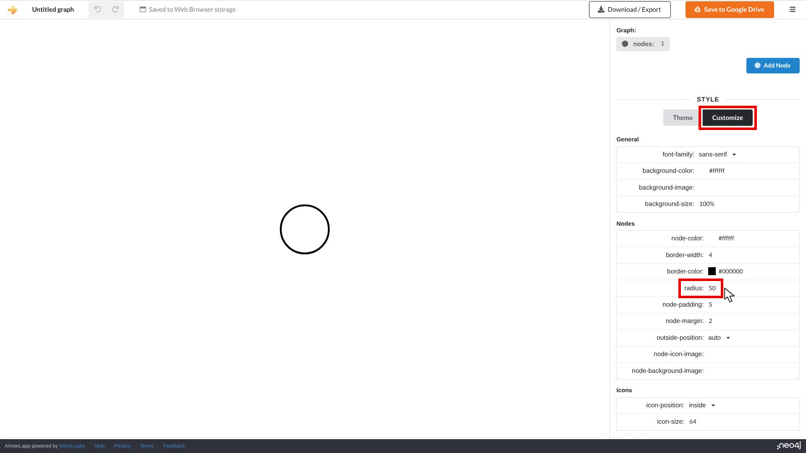
빈 원을 누르고 Caption에 이름을 적은 뒤, + Label을 눌러 생긴 칸에 종류를 적고 Tab으로 마칩니다.
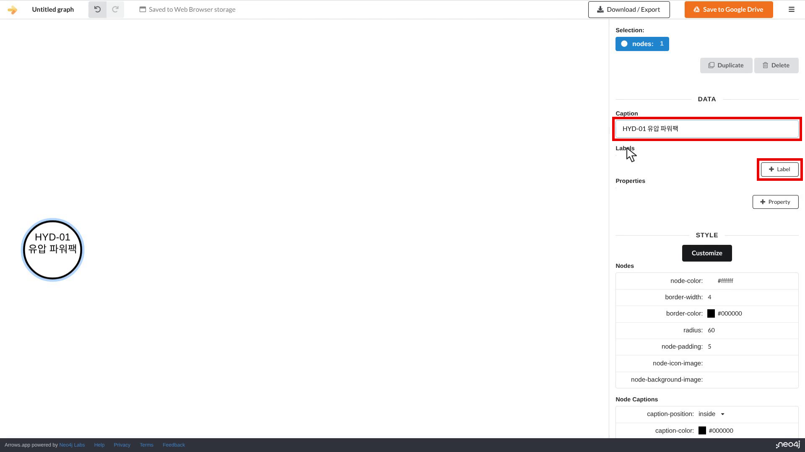
원을 누르면 둘레에 하늘색 띠가 생깁니다. 이 띠를 잡고 빈 곳으로 끌면 새 원과 화살표가 함께 생깁니다. 띠 안쪽을 잡고 끌면 원만 옮겨집니다. 화살표는 끌기 시작한 원에서 새 원 쪽으로 나갑니다. 화살표를 선택하고 Type에 관계 이름을 넣으세요.
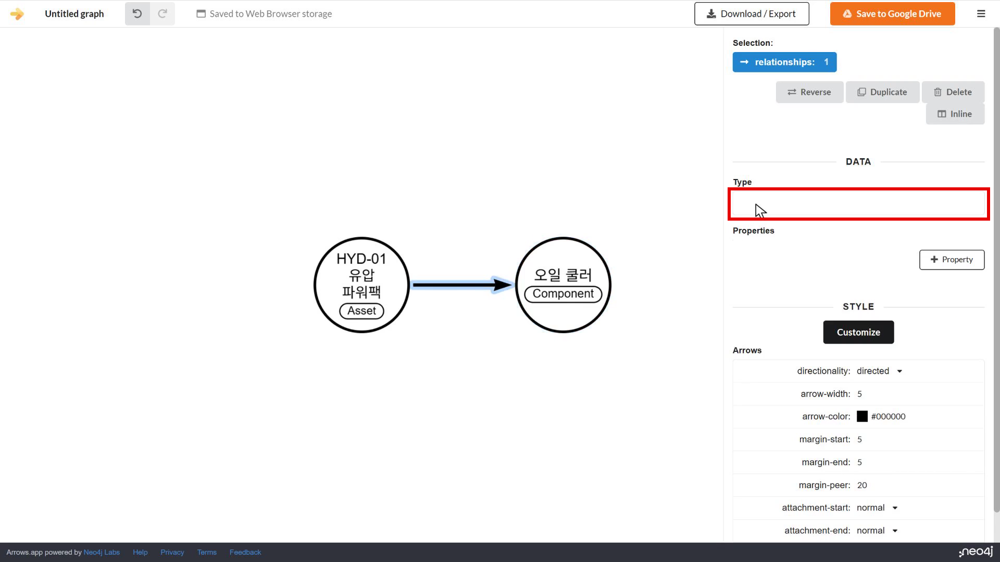
| Caption · 이름 | Label · 종류 |
|---|---|
| HYD-01 유압 파워팩 | Asset |
| 오일 쿨러 | Component |
| 유온 센서 TS1 | Sensor |
| 출발 | Type | 도착 |
|---|---|---|
| HYD-01 유압 파워팩 | HAS_COMPONENT | 오일 쿨러 |
| 오일 쿨러 | MONITORED_BY | 유온 센서 TS1 |
이번에 추가 설비 · 오일 쿨러 · 유온 센서

확인 원 3개 · 화살표 2개가 HYD-01 → 오일 쿨러 → 유온 센서 TS1 순서로 이어집니다.
증상과 고장을 구분하기
온도가 오른다는 증상과 냉각 성능을 잃었다는 고장 유형을 따로 그립니다. 원 두 개를 더 만들어 아래 표대로 이으세요. 하늘색 띠를 끌어 이미 있는 원 위에 놓으면 화살표만 생기고, 방향은 화살표를 선택해 Reverse로 바꿉니다.
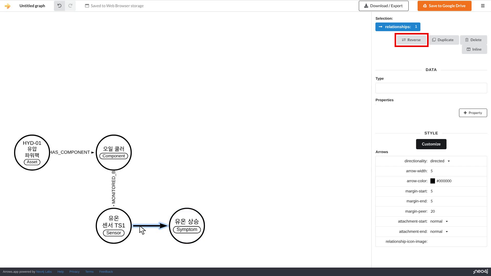
| Caption | Label |
|---|---|
| 유온 상승 | Symptom |
| 쿨러 냉각 성능 상실 | FailureMode |
| 출발 | Type | 도착 |
|---|---|---|
| 유온 상승 | OBSERVED_BY | 유온 센서 TS1 |
| 유온 상승 | INDICATES | 쿨러 냉각 성능 상실 |
| 쿨러 냉각 성능 상실 | OCCURS_IN | 오일 쿨러 |
이번에 추가 유온 상승 · 냉각 성능 상실

확인 원 5개 · 화살표 5개. 유온 상승에서 센서와 고장으로 화살표가 하나씩 나갑니다.
핀 오염의 조건과 조치 붙이기
같은 고장도 원인에 따라 조치가 다릅니다. 쿨러 핀 오염을 더해 고장 쪽으로 CAUSES를 잇고, 이 원을 선택해 + Property를 눌러 왼쪽 칸에 무엇을 볼지, 오른쪽 칸에 어떤 기준으로 가를지를 적으세요. 한 줄 더 적을 때는 + Property를 한 번 더 누릅니다. 두 조건을 함께 만족해야 핀 오염입니다. 값에는 부등호와 단위 기호가 들어가니 아래 표에서 복사해 붙이면 편합니다.
| Caption | Label |
|---|---|
| 쿨러 핀 오염 | Cause |
| 왼쪽 칸(무엇을 볼지) | 오른쪽 칸(기준) |
|---|---|
| 냉각 효율 | 30초 평균 < 70 % |
| 팬 진동 | 2분 평균 < 0.9 mm/s |
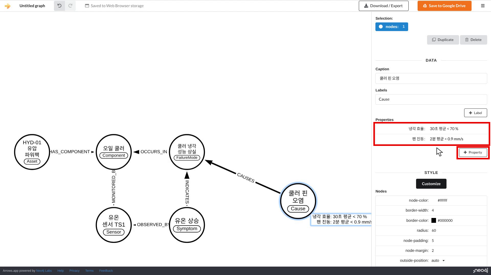
이번에 추가 핀 오염 · 판별 조건

팬 최대 운전(온도를 낮추는 완화 조치)과 쿨러 핀 세척(오염을 없애는 근본 조치), 그 근거 매뉴얼을 더하세요.
| Caption | Label |
|---|---|
| 팬 최대 운전 | Skill |
| 쿨러 핀 세척 | Skill |
| HM-8.5 즉시 완화 조치 | ManualSection |
| HM-8.7 근본 조치 | ManualSection |
| 출발 | Type | 도착 |
|---|---|---|
| 쿨러 핀 오염 | CAUSES | 쿨러 냉각 성능 상실 |
| 쿨러 냉각 성능 상실 | MITIGATED_BY | 팬 최대 운전 |
| 쿨러 냉각 성능 상실 | REMEDIED_BY | 쿨러 핀 세척 |
| 쿨러 핀 세척 | ADDRESSES | 쿨러 핀 오염 |
| 팬 최대 운전 | REFERS_TO | HM-8.5 즉시 완화 조치 |
| 쿨러 핀 세척 | REFERS_TO | HM-8.7 근본 조치 |
이번에 추가 팬 최대 운전 · 핀 세척 · 매뉴얼

확인 원 10개 · 화살표 11개. 핀 세척은 핀 오염을 가리키고, 팬 최대 운전은 HM-8.5로 이어집니다.
다른 원인으로 가지 넓히기
팬 구동 불량과 주변 온도 상승을 같은 고장의 원인으로 더하고, 원인마다 조치와 매뉴얼을 이으세요. HM-8.7은 있는 원을 씁니다.
| Caption | Label |
|---|---|
| 팬 구동 불량 | Cause |
| 팬 점검 | Skill |
| HM-8.1 팬 벨트 점검 | ManualSection |
| 주변 온도 상승 | Cause |
| 캐비닛 환기 보강 | Skill |
두 원인에도 가려낼 값을 적습니다. 밑줄 붙은 부등호(≥)는 키보드에 없으니 아래 표에서 복사해 붙이세요.
| 원 | 왼쪽 칸 | 오른쪽 칸 |
|---|---|---|
| 팬 구동 불량 | 팬 진동 | 2분 평균 ≥ 0.9 mm/s |
| 주변 온도 상승 | 캐비닛 온도 | 2분 평균 ≥ 35 ℃ |
| 출발 | Type | 도착 |
|---|---|---|
| 팬 구동 불량 | CAUSES | 쿨러 냉각 성능 상실 |
| 쿨러 냉각 성능 상실 | REMEDIED_BY | 팬 점검 |
| 팬 점검 | ADDRESSES | 팬 구동 불량 |
| 팬 점검 | REFERS_TO | HM-8.1 팬 벨트 점검 |
이번에 추가 팬 구동 불량 · 팬 점검 · HM-8.1

| 출발 | Type | 도착 |
|---|---|---|
| 주변 온도 상승 | CAUSES | 쿨러 냉각 성능 상실 |
| 캐비닛 환기 보강 | ADDRESSES | 주변 온도 상승 |
| 쿨러 냉각 성능 상실 | REMEDIED_BY | 캐비닛 환기 보강 |
| 캐비닛 환기 보강 | REFERS_TO | HM-8.7 근본 조치 |
이번에 추가 주변 온도 상승 · 캐비닛 환기 보강

확인 원 15개 · 화살표 19개. 고장으로 들어오는 CAUSES가 3개이고, 근본 조치는 각각의 원인을 가리킵니다.
고장의 연결과 절차 번호 적기
팬 베어링 열화와 이를 가리키는 진동 증가를 더하세요.
| Caption | Label |
|---|---|
| 팬 베어링 열화 | FailureMode |
| 진동 증가 | Symptom |
| 출발 | Type | 도착 |
|---|---|---|
| 팬 베어링 열화 | LEADS_TO | 쿨러 냉각 성능 상실 |
| 진동 증가 | INDICATES | 팬 베어링 열화 |
조치에서 매뉴얼로 가는 화살표를 선택하고 + Property로 왼쪽 칸에 절차, 오른쪽 칸에 아래 번호를 넣으세요. 화살표에도 원처럼 Properties가 있습니다. 같은 매뉴얼 절이라도 실행할 절차는 다릅니다.
| 화살표 출발 | 도착 | 절차 |
|---|---|---|
| 팬 최대 운전 | HM-8.5 | SOP-COOL-11 |
| 쿨러 핀 세척 | HM-8.7 | SOP-COOL-14 |
| 캐비닛 환기 보강 | HM-8.7 | SOP-COOL-15 |
| 팬 점검 | HM-8.1 | SOP-FAN-11 |
이번에 추가 진동 증가 · 팬 베어링 열화 · 절차 번호

확인 원 17개 · 화살표 21개. 매뉴얼로 이어지는 화살표 4개에 절차 번호가 표시됩니다.
색칠하고 그림으로 판단하기
판단할 때 맞춰 볼 것은 원인과 조치의 짝이라 둘을 색으로 가릅니다. 쿨러 핀 오염을 누르고 Ctrl을 누른 채 팬 구동 불량, 주변 온도 상승을 누르세요. 오른쪽에 nodes: 3이 보이면 셋이 함께 골라진 것입니다. node-color의 #ffffff 대신 연한 빨강 #fca5a5를 적고 Tab으로 넘어갑니다. 조치 네 개(팬 최대 운전 · 쿨러 핀 세척 · 팬 점검 · 캐비닛 환기 보강)도 같은 식으로 골라 연한 초록 #86efac를 적으세요.
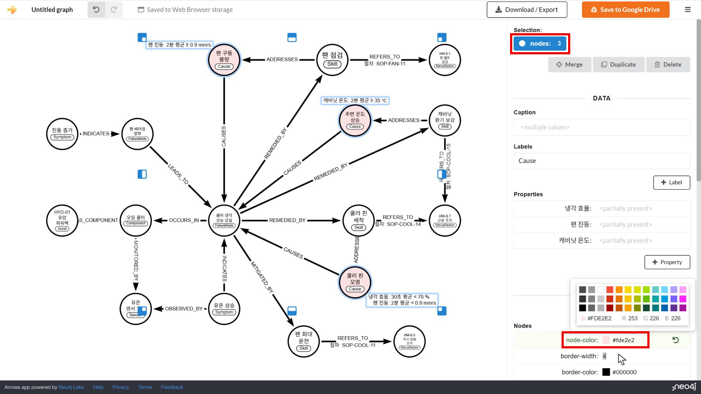
이론에서 본 쿨러 사건의 값은 냉각 효율 30초 평균 46.2 %, 팬 진동 2분 평균 0.575 mm/s, 캐비닛 온도 2분 평균 28 ℃입니다. 쿨러 냉각 성능 상실로 들어오는 CAUSES를 거꾸로 따라가 원인 셋을 찾고, 원마다 붙인 조건과 이 값을 견주세요. 맞는 원인에서 조치와 매뉴얼까지 화살표를 따라 읽습니다.
확인 핀 오염의 두 조건만 맞습니다. 근본 조치는 쿨러 핀 세척 → HM-8.7, 세척 전에 유온을 낮추는 즉시 완화는 팬 최대 운전 → HM-8.5입니다.
값이 다르면 길도 달라집니다. 팬 진동이 2분 평균 1.4 mm/s라면 팬 구동 불량이 맞아 팬 점검 → HM-8.1로 갑니다. 처음 값에서 캐비닛 온도만 38 ℃라면 주변 온도 상승과 핀 오염이 둘 다 맞아, 캐비닛 환기 보강과 쿨러 핀 세척을 함께 봅니다. 팬 진동 값을 아직 못 받았다면 냉각 효율만으로 핀 오염이라고 정하지 말고, 진동 값을 받을 때까지 보류합니다.
파일로 남기고 다시 열기
위쪽 Download / Export를 누르세요. 처음 열린 PNG 탭에서는 안내 글과 Transparent background 체크를 그대로 두고, 크기별 Download 가운데 맨 위 줄 하나만 받습니다. PNG는 보고서나 메신저에 붙이는 그림 파일입니다.
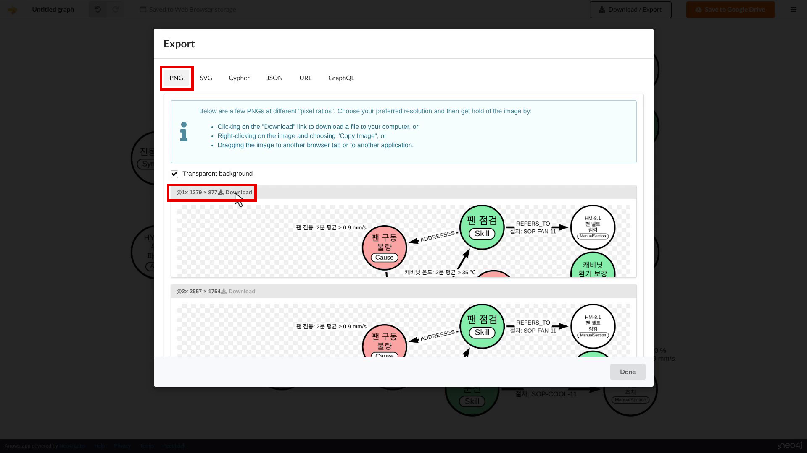
이어서 JSON 탭의 Download로 다시 열어 고칠 수 있는 파일을 받고, Done으로 닫습니다. 아래에 나오는 글은 그 파일의 내용이라 읽지 않아도 됩니다.
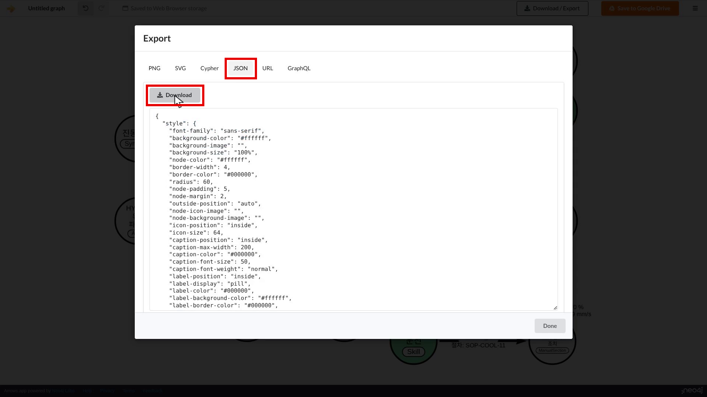
받은 파일이 제대로 열리는지 새 그림에서 확인합니다. 왼쪽 위 로고를 누르고 New → Web Browser storage를 누르면 가운데에 빈 원 하나만 있는 새 그림이 열립니다. 방금 그린 그림은 이 브라우저에 그대로 남아 있습니다. 다시 로고에서 Import를 누르세요.
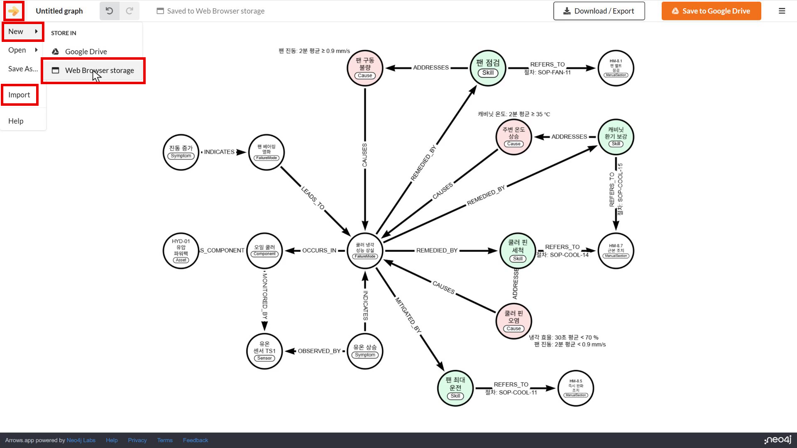
위의 회색 안내 글은 넘어가고 Choose File을 눌러 내려받기 폴더의 Untitled graph.json을 고르세요. 아래 칸에 파일 내용이 채워지면 Import를 누릅니다.
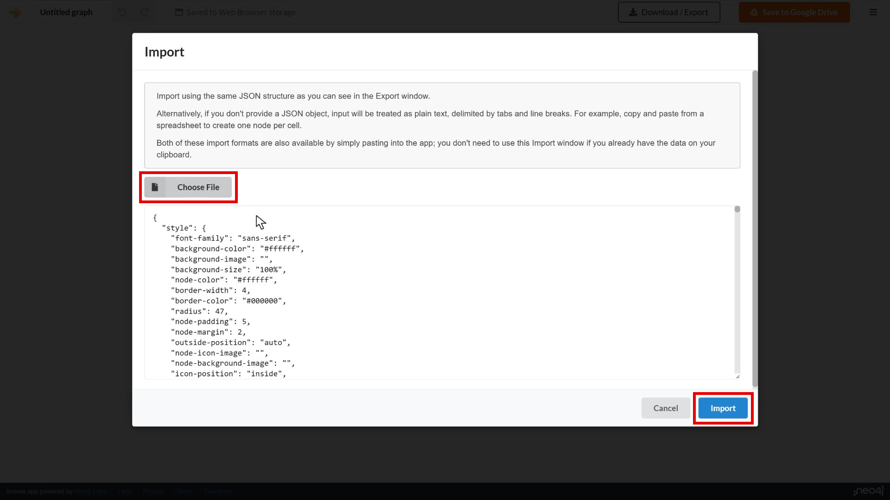
불러온 원과 화살표가 모두 골라진 채로 나타나서 오른쪽 위에 그 수가 보입니다. 새 그림에 처음부터 있던 빈 원은 남아 있으니, 그 원을 누르고 오른쪽 Delete로 지우세요.
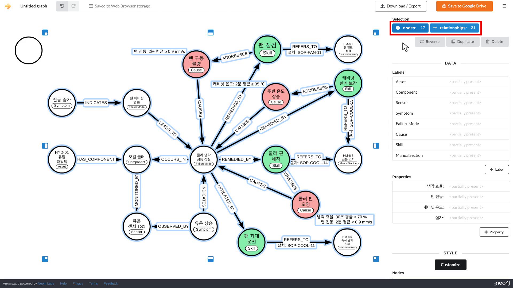
확인 nodes: 17 · relationships: 21로 그린 것과 같고, 원인 원 옆의 조건과 매뉴얼로 가는 화살표의 절차 번호 4개가 그대로 들어와 있습니다.
받은 두 파일은 이름이 Untitled graph라서 쿨러_지식그래프.json, 쿨러_지식그래프.png로 바꿔 두세요.
학교 PC는 껐다 켜면 받은 파일과 브라우저에 남은 그림이 지워집니다. 두 파일을 USB나 본인 클라우드에 옮겨 두세요.
마지막으로 이 그림을 데이터베이스에 넣는 명령으로 바꿔 봅니다. Download / Export를 다시 누르고 Cypher 탭을 누르면 CREATE로 시작하는 글이 나옵니다. 원과 화살표, 원인 조건, 절차 번호가 Neo4j에 넣을 수 있는 Cypher 명령으로 바뀐 것입니다. 명령은 다음 회차에서 직접 다루니 위의 고르는 칸과 파란 단추는 그대로 두고 Done으로 닫으세요.
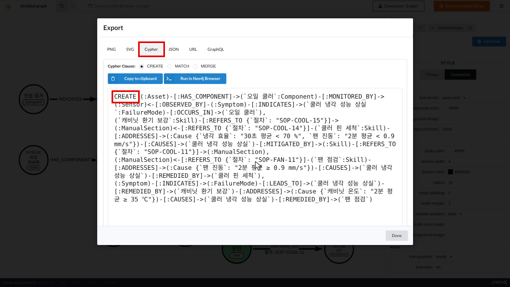